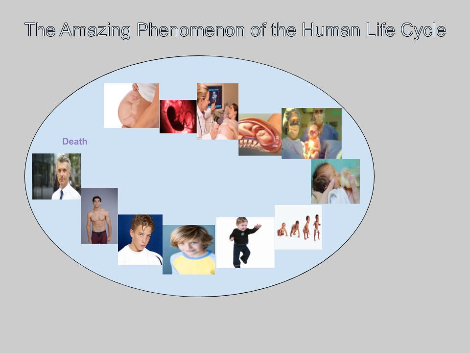

Short paragraph introducing the story. What is it about? The Amazing Phenomenon of the Human Life Cycle. Too many lives have been lost over nothing. I want to make a statement to show how precious human life is and how much time it takes from conception through birth for a human life to be formed, before coming to the world. It is a social cause not political. How would you summarize the message you are trying to convey? Today, in America, people are losing their lives over nothing. They have been killed for their belongings or of mistaken identity or gang related violence. By showing the process of the human life cycle, will not only touch the heart of those criminals but also decrease the senseless killing of innocent people and at the same time preserve human life.
Credits: Calas, Redgy. “The Amazing Phenomenon of the Human Life Cycle”